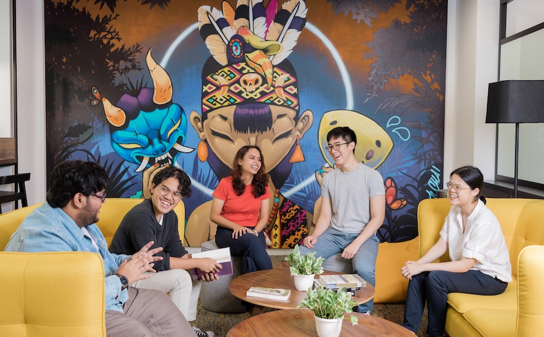
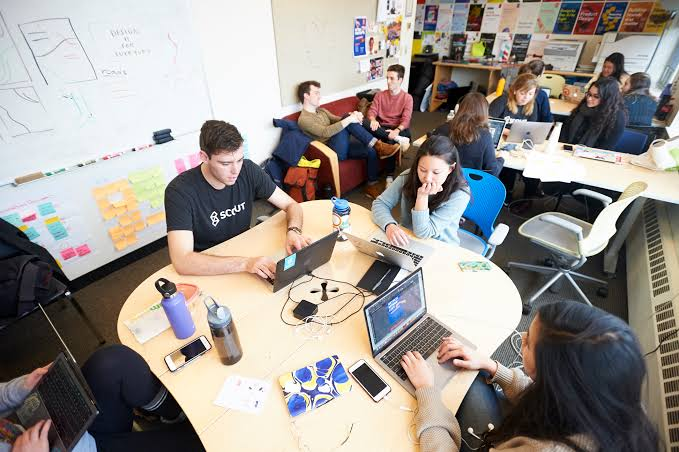
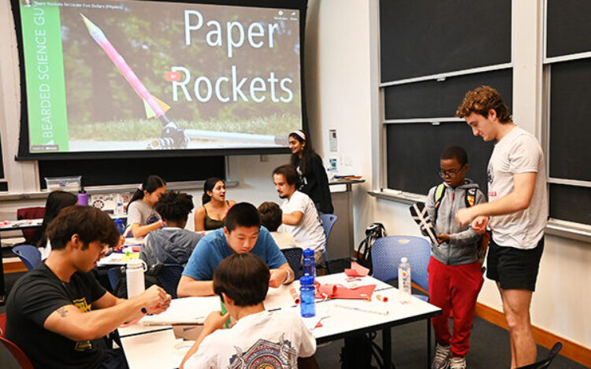

We organize various activities for our members, including workshops, social events, and community service projects.
Every week, we host events such as game nights, movie screenings, and guest speaker sessions to foster a sense of community among our members.
The Coding Club is a student-led community dedicated to helping members learn programming, build real-world projects, and grow their technical skills in a friendly and collaborative environment. We believe coding is a skill anyone can learn, and our goal is to make that journey easier, more fun, and more connected through teamwork and shared learning.
Membership is open to all students, regardless of major or prior coding experience. Whether you are a complete beginner who has never written a line of code or an experienced programmer looking to sharpen your skills, everyone is welcome. All you need is curiosity and a willingness to learn.
Joining the Coding Club gives you access to hands-on workshops, mentorship from senior members, and opportunities to work on real projects with a supportive team. Beyond technical skills, you'll build friendships, improve your problem-solving abilities, and gain experience that looks great on your resume or portfolio.


The Student Club is a community built for students who share a passion for learning, creativity, and personal growth. Our purpose is to create a space where members can explore new skills, work on meaningful projects, and connect with like-minded peers outside the classroom. We aim to make student life more engaging, collaborative, and fun.
Our club welcomes all students, regardless of major, year of study, or prior experience. Whether you're a first-year student looking to make new friends or a senior wanting to take on a leadership role, everyone is welcome to join. No special skills are required, just enthusiasm and a willingness to get involved.

Being part of the Student Club gives you the chance to build valuable skills, gain hands-on experience, and expand your network of friends and mentors. You'll take part in exciting events, workshops, and activities that look great on your resume, while also having fun and creating memories that last well beyond graduation.